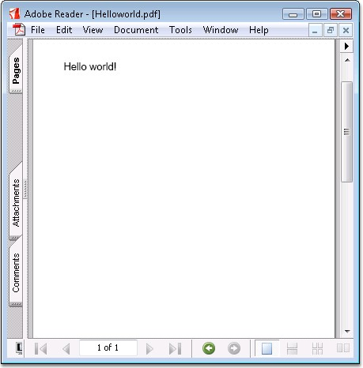

Drawing Text in a PDF document is made simpler and similar to .NET GDI. This section demonstrates how a string is drawn in a PDF page by using Essential PDF.
The process is very similar to drawing any other object on the PDF page. The string is drawn by using the DrawString method of the Graphics class. You also need to specify the font and brush with which you want the string to be drawn.
|
[C#]
//Creates a new PDF document. PdfDocument doc = new PdfDocument();
//Adds a page to the document. PdfPage page = doc.Pages.Add();
//Creates Pdf graphics for the page PdfGraphics g = page.Graphics;
//Creates a solid brush. PdfBrush brush = new PdfSolidBrush(Color.Black);
//Sets the font. PdfFont font = new PdfStandardFont(PdfFontFamily.Helvetica, fontSize);
//Draws the text. g.DrawString("Hello world!", font, brush, new PointF(20, 20));
//Saves the document. doc.Save("Sample.pdf"); |
|
[VB.NET]
'Creates a new PDF document. Dim doc As PdfDocument = New PdfDocument()
'Adds a page to the document. Dim page As PdfPage = doc.Pages.Add()
'Creates Pdf graphics for the page Dim g As PdfGraphics = page.Graphics
'Creates a solid brush Dim brush As PdfBrush = New PdfSolidBrush(Color.Black)
'Sets the font Dim font As PdfFont = New PdfStandardFont(PdfFontFamily.Helvetica, fontSize)
'Draws the text g.DrawString("Hello world!", font, brush,new PointF(20,20))
'Saves the document. doc.Save("Sample.pdf") |

Figure 34: Simple Text